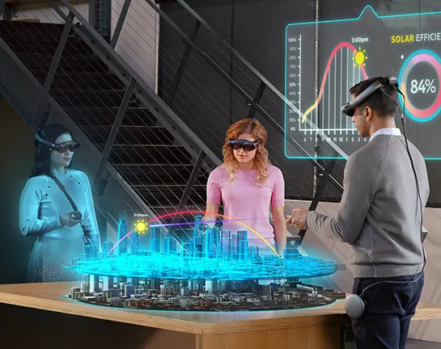

REALIDAD MIXTA

¿Que es la realidad mixta?
En el contexto de la REALIDAD VIRTUAL, la realidad mixta se refiere a la capacidad de los dispositivos inmersivos (como el Meta Quest 3) de combinar el entorno fisico del usuario con elementos digitales permitiendo la INTERACCIÓN EN TIEMPO REAL.